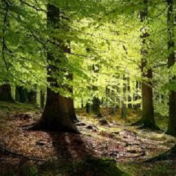
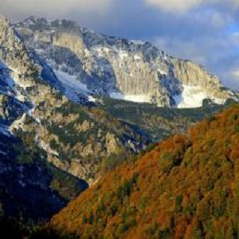
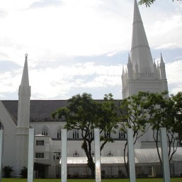
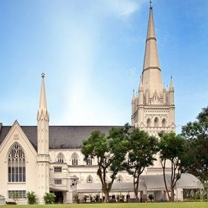
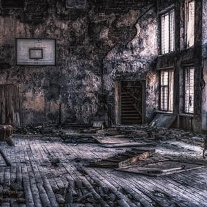
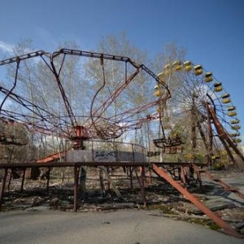

morly旅游网
乌克兰（乌克兰语：УКРАЇНА）位于欧洲东部，东接俄罗斯、南濒黑海，北与白俄罗斯毗邻、西与波兰、斯洛伐克、匈牙利、罗马尼亚和摩尔多瓦诸国相连。乌克兰地理位置重要，是欧洲联盟与独联体特别是与俄罗斯地缘政治的交叉点。
乌克兰国土面积的三分之二为黑土地，占世界黑土总量的1/4。森林资源较为丰富，森林覆盖率43%，跨越三个植被带：森林沼泽带、森林草原带和草原带。
来看看乌克兰的主要美景：
喀尔巴阡山脉原始山毛榉林
由10个跨国的连续遗产组成，沿185公里的轴线，从乌克兰拉希夫山脉和Chornohirskyi西沿Polonynian山脊，一直到斯洛伐克的Bukovské Vrchy和Vihorlat山脉。这10个遗址是原始的、多元的温带森林的突出例子，展示了最完整、最广泛的生态模式和纯粹的欧洲山毛榉群丛在各种环境条件下的生长过程。它们包含着宝贵的山毛榉基因库和与这些森林栖息地相关并依赖其生存的许多生物。它们还是上一个冰河时代后陆地生态系统和群落再移植和发展的突出例子。帕伊内角峰位于智利南部，属南美安第斯山脉群峰之一，它们是两个带粉红色的灰色花岗岩峰，每个山峰的高度约2545米，顶部为黑色板岩，高高耸立在起伏的草原、长着红黄绿三地毯般苔藓的沼泽以及平静清澈的湖面之上。
 圣安德烈教堂
坐落于基辅的陡峭的圣安德烈山，名字也是源于这座山，俯瞰着古老的波迪尔街区，21世纪初是乌克兰的四大建筑地标之一，壮丽的外表深深吸引着世界各地游客的来访。圣安德烈教堂是一座巴洛克风格的教堂，共有两层，远远望去就像是一座艺术品，庄严而又神圣，让人赞叹不已。教堂兴建于1747–1754年，由意大利建筑师设计。大教堂长31.7米，宽20.4米，最高处可达50米，宏伟壮观，引人注目。教堂由一个大穹顶和5个尖塔组成，教堂的外立面由6根科林斯式圆柱作装饰，室内的窗户和门由精美而华丽的坠饰作装饰，壮观无比，引人注目。
 爱的隧道
位于乌克兰的Klevan的火车道，当地人称呼这条道为“通往爱的隧道”,严格意义上说，这应该不算是一条道路或隧道，但介于它无法比拟的美丽，无数人感叹，这大概是这个星球最漂亮的一条火车道了，它绿得让人窒息。这条美丽的铁路是由枝蔓围成的。拱形隧道春意盎然，满眼皆绿；春秋季节，树叶茂盛，生机勃勃；夏日酷暑，浓荫遮盖，清凉气爽；寒冬腊月，阳光透过空隙，洒下一片温暖的阳光。最让人失望也是让人庆幸的一点就是知道它居然在人间了吧。不过火车呼啸而过的时候，恐怕还真有点震耳欲聋。
切尔诺贝利
被称为“鬼城”，于1986年发生了历史上最严重的核电厂事故，即切尔诺贝利核事故。切尔诺贝利曾经被认为是最安全、最可靠的核电站，可1986年一声巨响彻底打破了这一神话，切尔诺贝利核电站的第四号反应炉发生了爆炸，后续的爆炸引发了大火并散发出大量高辐射物质到大气层中，涵盖了大面积区域，所释放出的辐射线剂量是广岛原子弹的400倍以上。切尔诺贝利事故迫使切尔诺贝利成千上万人逃离、造成长期的健康、农业以及经济灾难。核辐射污染让这里成为危险区域，至今仍是死城。21世纪初，核电站及其周围城镇依然保持着灾难发生时的情景，宛如一座鬼城，这里的时间仿佛已经静止。25年过去了，他对人们造成的伤害依然存在，受害的人们依然没有办法走出悲痛的阴影。
 内容整理至网络，如有侵权，请联系我们！1255394075@qq.com